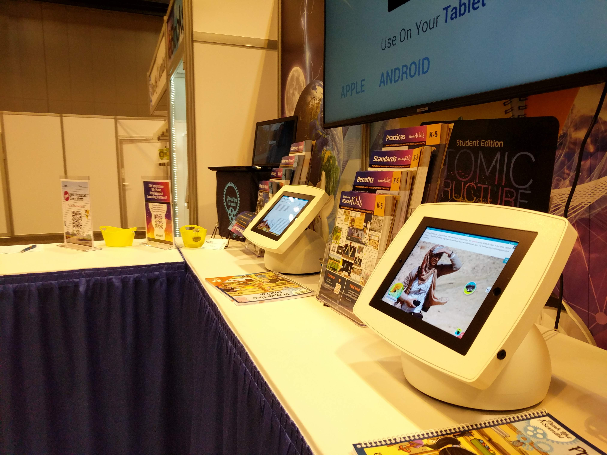
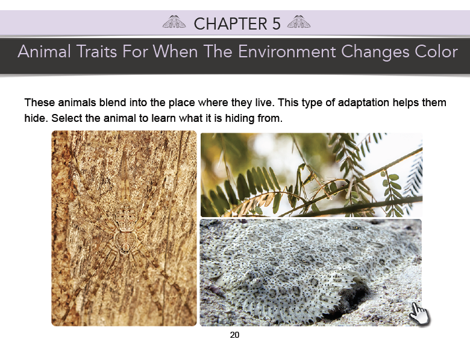
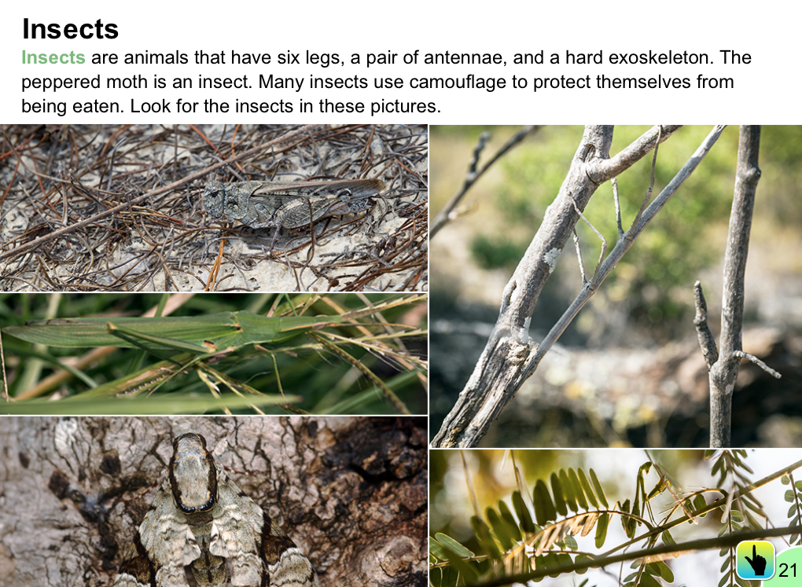
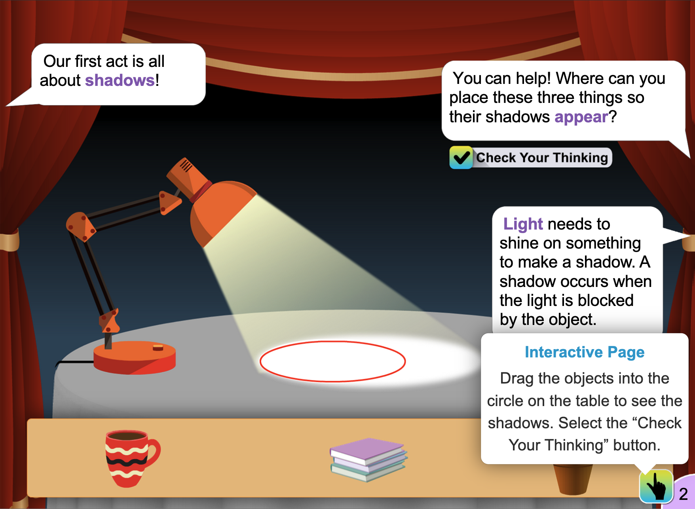
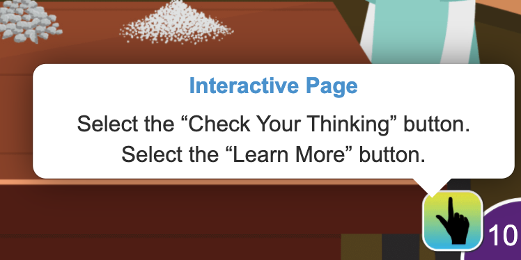
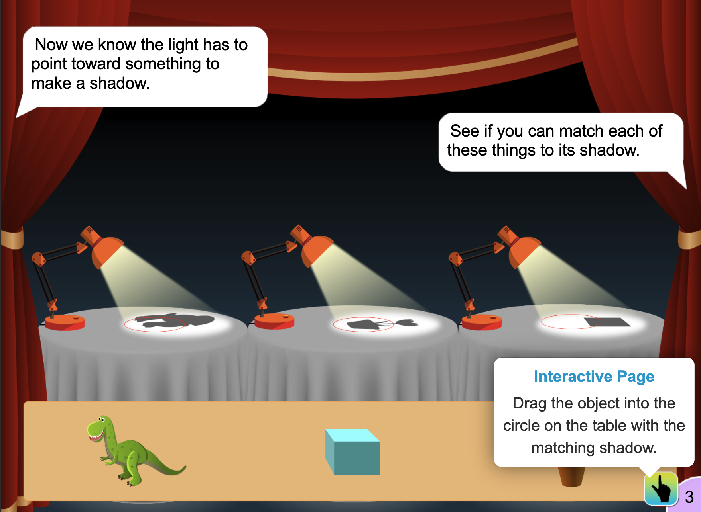
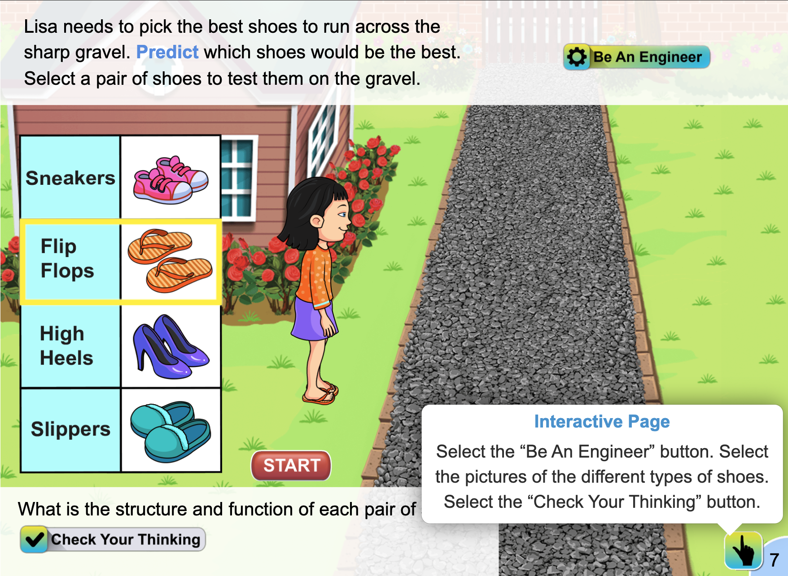
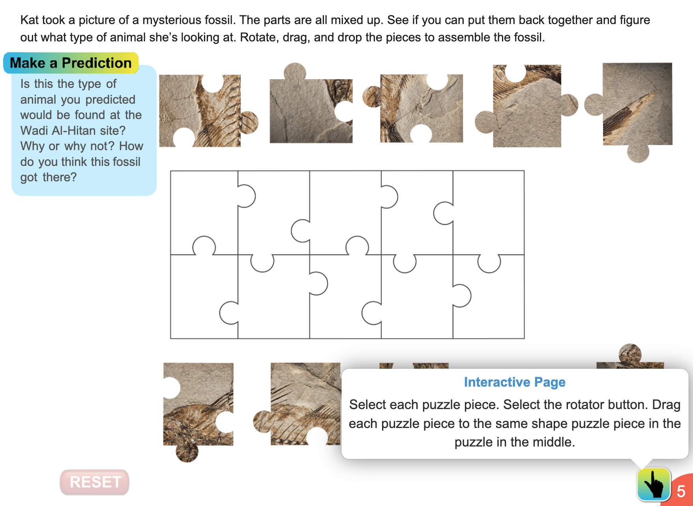

National Science Teaching Association (NSTA)
Instruction use in K-5 interactive science ebooks via pop-ups and embedded text.
UX design and copy.
The results were instructions embedded in the narrative text as well as dedicated pop-up instructions. The instructions now focus on the act of interacting with the simulation without giving any hints to the answers.
90% of my time at conferences, I spent gathering qualitative research, interacting and observing attendees interact with our product. Research discovery showed how instructions could be clarified, simultaneously easing the narrative flow. Although adult conference attendees were not actively struggling to understand the instructions, they did take more time than I thought necessary as an adult, indicating a child–the target demographic–would have even more trouble. I saw this as an opportunity to clarify the instructions and make them more seamless in the story's narrative.
Tablets at NSTA conference where teachers would interact with the ebooks
The pilot book’s narrative text included interactivity instructions, but interactive elements were not inherently obvious, obstructing the user flow, and design critiques established the legacy hand icon was used inconsistently.
Pilot ebook with legacy hand-icon
Qualitative data analysis from a focus group determined room for improvement of the instructions. Based on the user feedback, I brainstormed how to improve the instruction implementation ensuring the user could check what they were supposed to do on each page.
Initially, instructions would only be within the narrative text. However, too many instructions would impede the user flow and narrative and may not be necessary for repetitive interactive elements.
The focus group indirectly uncovered even using the hand-icons consistently would present a host of issues: unhelpful visual clutter, quickly date the UI, and fully rely on instructions in the text– which as previously determined would impede the narrative.
Combining instruction and interaction design, I created an interactive hand icon–signifying touch–with a pop-up, following the style guide for interactive elements. In the pop-up, instructions and would appear on every interactive page. For the least impact on visual design, the pop-up button is placed next to the page number. The page number itself could have been the pop-up element, but since K-5 students were the target audience, UI intuitiveness out-weighed style.
Location of pop-up button next to page number
Based on evaluative research done at conferences, after the release of the sixth ebook, I implemented two changes.
I widened the width of the pop-ups' boxes, allowing single sentence instructions to limit scanning impulses (as it is important the user read all of the instructions), and be easier to read for K-5 students.
Before: pop-up boxes were often narrow covering main screen text and decreasing legibility
After: pop-up boxes were widened not blocking main screen text and allowing easier legibilty–it is important the user read all the instructions carefully
I removed any instructions insinuating right and wrong answers or extraneous information already covered in the narrative text in the instruction pop-up.
Before: pop-up box instructions had extraneous text increasing reading time. In this image the narrative text says to match the objects in the shadow, therefore it is not entirely necssary in the pop-up box instructions. Simply saying "Drag the object onto the tables" would be enough.
After: pop-up box instructions did not have repetitive information covered in the narrative text
These changes sped up and increased comprehension enough of conference attendees to mark a difference.
However, the frequency and style of embedded instructions in the narrative were still inconsistent between ebooks.
There was still room for improvement in the instructional design. The next obstacle I tackled was making instructions so easy to find and understand if someone navigated to any page, interactivity and associated instructions would be obvious.
From the sixth to the thirteenth release, I standardized embedded instructions–copy I wrote and integrated. General instructions became part of the story not added on at the end of the narrative. The pop-up instructions told the user exactly what to do without giving any hints to correct answers.
After: pop-up box instructions pertained to interactivity only and instructions were embedded seemlessly into the narrative text
Due to budget constraints, we could not retroactively update previous books' instructions. However, at conferences, I was able to evaluate which books invoked the most questions and which ones garnered the least–later releases created the least questions.